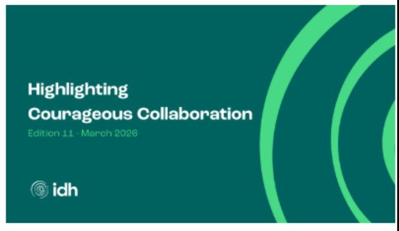
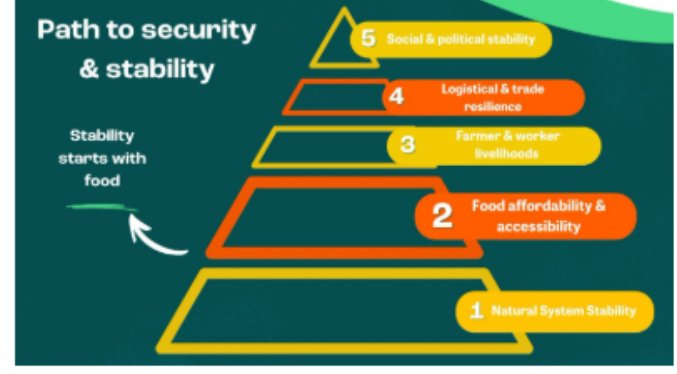
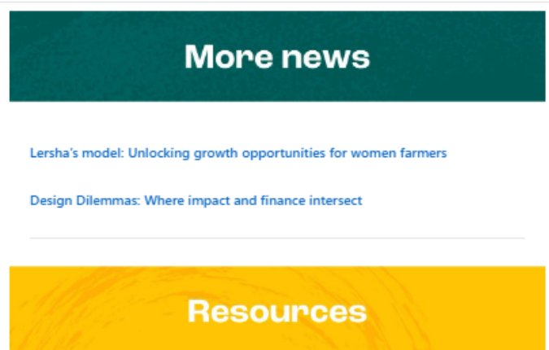
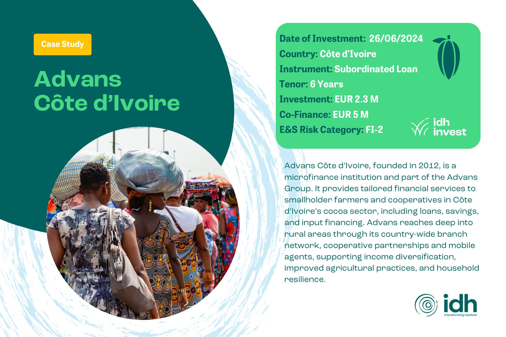
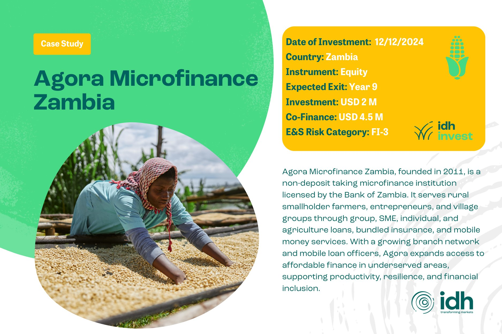
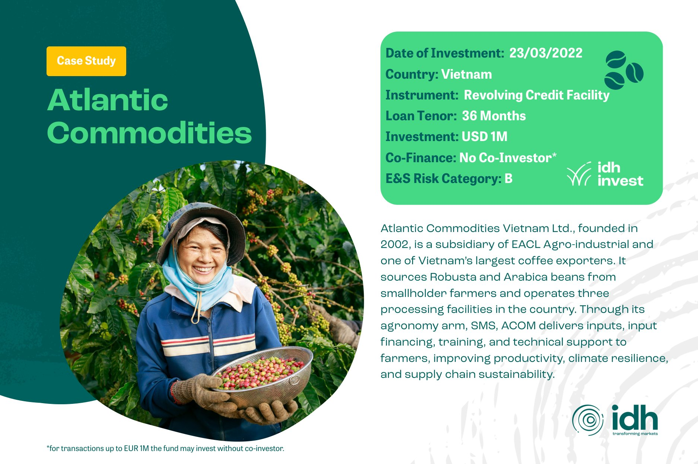

Communications Intern
Design & content across IDH
A wide-ranging communications role where design, content, and data all lived on my desk at once.
What I did
As Communications Intern at IDH, my work spanned the full range of design and communications: from the website's UX down to the reporting that told us if any of it was working.
- Website & micro-sites: managed the IDH website and built several supporting micro websites, working through the UX end to end, including the Living Wage Roadmap and the Living Wage & Living Income Summit 2026 event page.
- Newsletters: designed and sent IDH's monthly newsletter from March through July, layout, sections, and imagery all included.
- E-learning prototyping: prototyped an interactive e-learning module in Articulate Rise.
- Social media graphics: designed graphics for IDH's social media posts, keeping visuals consistent with the brand.
- Event photography: official photographer for the Living Wage & Living Income Summit 2026 and Conferentie Agrohandel 2026.
- Data & reporting: from February to August, analysed performance data and wrote the quarterly Reputation Monitor Reports, tracking how website, social, and press efforts were landing.
Website & micro-sites
Two pages I designed the UX and built out on the IDH website:
Newsletters
From March to July, I designed and put together IDH's monthly newsletter end to end. Edition 11 is a good example of the format, from the cover through the "Path to security & stability" infographic to the section design running through the rest of the issue.



Social media graphics
A two-slide "Case Study" template I designed for IDH Invest, used to introduce their portfolio companies across social channels. Same layout each time, with color and imagery adapted per company:



Event photography
I was the official photographer for two IDH events: the Living Wage & Living Income Summit 2026 and Conferentie Agrohandel 2026.
The takeaway: going from UX work to graphic design to spreadsheets of engagement data in the same week taught me how much good communication design depends on understanding what the numbers are actually saying.